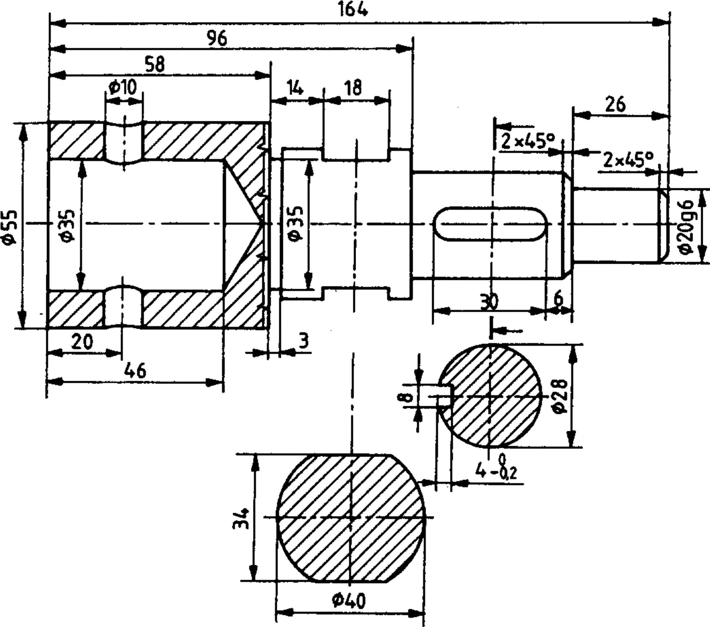
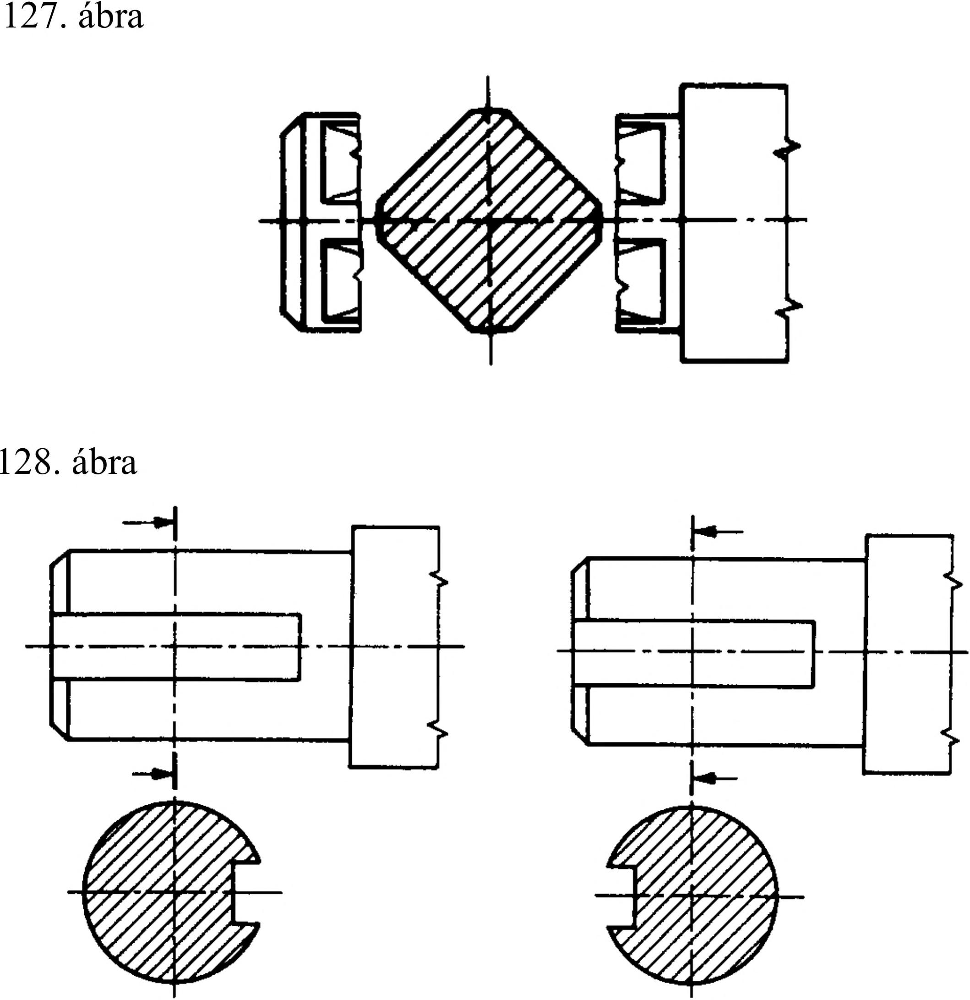

6. Metszeti ábrázolás 6.2.6. A szelvény Metszeti ábrázolás esetén gyakran nincs szükség a metszősík mögötti részek bemutatására, elegendő, ha a tárgy metszősíkkal érintkező felületét - szelvényét - ábrázoljuk. A szelvény a képzeletben elmetszett tárgy metszésfelülete, a metszősík mögötti nézetrészek ábrázolása nélkül. Rajzi ábrázolásnál a szelvényt befordítjuk a képsíkba, felületét 45°-os vékony folytonos vonallal vonalkázzuk, és megadjuk méreteit (126. ábra). 126. ábra A szelvény elhelyezhető: a vetületi rajzon belül a) a kontúrvonal megszakítása nélkül vékony folytonos határoló vonallal (127. ábra), b) a kontúrvonal megszakításával vastag vonalú határolással (128. ábra), a vetületi rajzon kívül a) a metszősík nyomvonalának meghosszabbításán (129. és 130. ábra), 129. ábra 130. ábra 36
 